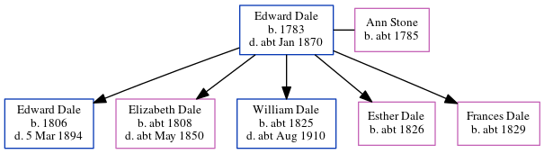

Edward Dale 1783 - c1870
[ Home ] | [ Calendar ] | [ Surnames Index ] | [ Errors ] | [ Family History ]Edward Dale, the 4 times great-grandfather of Nigel Horne, was born in Canterbury, Kent, England in 17831 and married Ann Stone (with whom he had 5 children: Edward, Elizabeth, William, Esther and Frances) at St Mary Bredin's Church in Canterbury on 13 Jul 18063.
During his life, he was living in Chartham Hatch, Kent, England on 6 Jun 18417; on North Lane, Westgate in Canterbury on 30 Mar 18516; and at Nunnery Cottages in Canterbury on 7 Apr 18615.
He died c. Jan 1870 in Bridge, Kent, England2 and was buried at St Mary, Chartham, Kent on 7 Jan 18704.
Children
- Edward was born in 1806
- Elizabeth was born c. 1808
- William was born c. 1825
- Esther was born c. 1826
- Frances was born c. 1829
Citations
- Kent, Canterbury Archdeaconry burials 1538-1988 - Findmypast
- England & Wales deaths 1837-2007 - Findmypast
- Kent, Canterbury Archdeaconry marriages 1538-1928 - Findmypast
- Kent, Canterbury Archdeaconry burials 1538-1988 - Findmypast
- 1861 England, Wales & Scotland Census - Findmypast (was age 84 and the brother of the head of the household)
- 1851 England, Wales & Scotland Census - Findmypast (was age 70 and the head of the household)
- 1841 England, Wales & Scotland Census - Findmypast (was age 55)
Media
England & Wales deaths 1837-2007 - BMD/D/1870/1/AZ/000094/030
Kent, Canterbury Archdeaconry marriages 1538-1928 - GBPRS/CANT/M/97174419/1
England Marriages 1538-1973 - R_847966590
Kent, Canterbury Archdeaconry burials 1538-1988 - GBPRS/CANT/D/95595682
1851 England, Wales & Scotland Census - GBC/1851/0005790120
1841 England, Wales & Scotland Census - GBC/1841/0014002980
Family Tree
Map
Generated by ged2site. Last updated on Jul 3, 2024
Known Issues
Listed in the residence for 6 Jun 1841, but spouse Ann Stone is not
Listed in the residence for 7 Apr 1861, but spouse Ann Stone is not